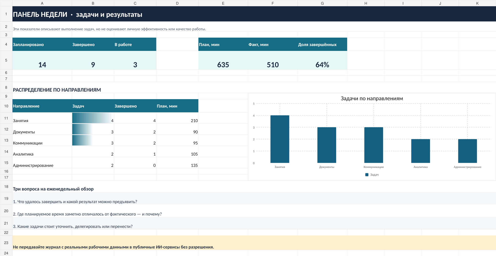

Таблица может быть не только списком задач, но и инструментом для спокойного анализа рабочей недели. Вы увидите, что удалось завершить, где не хватило времени и что стоит изменить. ИИ поможет осмыслить проверенные показатели — считать их за вас не нужно.
Какой результат получится
Личная таблица на одну неделю: задачи по направлениям, приоритет, статус, план и фактически потраченное время. Показатели и диаграмма обновляются из записей. Это не рейтинг сотрудника и не средство контроля коллег.
14
задач в примере
9
завершённых задач
3
задачи в работе
Числа рассчитаны по 14 вымышленным задачам. Сравнение плана и факта не показывает «эффективность»: часть задач ещё не завершена.

Откройте шаблон в удобном редакторе
И Яндекс Таблицы, и Google Таблицы работают с одной учебной книгой «Панель рабочей недели» (XLSX). Сравниваем одинаковые показатели и выполняем одно и то же действие.
Маршрут А
Яндекс Таблицы
- Скачайте XLSX и откройте Яндекс Диск.
- Нажмите «Загрузить», выберите файл и откройте его двойным щелчком.
- На листе «Панель» сравните данные с эталоном ниже.
- На листе «Задачи» измените статус одной записи на «Готово» и вернитесь на панель.
- Убедитесь, что показатель обновился. Проверьте диаграмму и сохранение изменений.
Маршрут Б
Google Таблицы
- Скачайте тот же XLSX и откройте Google Таблицы.
- Создайте новую таблицу → «Файл → Импорт → Загрузить» и выберите файл. Импортируйте листы.
- На листе «Панель» сравните значения с эталоном ниже.
- На листе «Задачи» измените статус одной записи на «Готово» и вернитесь на панель.
- Убедитесь, что формулы обновились. Проверьте диаграмму и сохранение файла.
Справка Google: XLSX в Sheets ↗
До изменений: 14 задач, 9 завершено, 3 в работе; план 635 минут, факт 510 минут. После изменения статуса одной задачи проверьте не только новый итог, но и формулу, которая его считает. Если оформление диаграммы изменилось при импорте, настройте её по исходным данным.
Создать собственную таблицу с нуля
Этот путь одинаков по смыслу в обоих редакторах: Яндекс Диск → «Создать → Таблицу» или Google Таблицы → «Пустая таблица». Назовите её «Моя рабочая неделя».
- Создайте столбцы
Дата, задача, направление, статус, план (минуты), факт (минуты); для расширенного варианта — результат и комментарий.
- Заполните минимум пять учебных задач
Можно перенести их из примера CSV через копирование строк или взять из готового XLSX. Для начала не нужны реальные персональные сведения.
- Подсчитайте показатели и постройте диаграмму
Для статусов используйте фильтр и
COUNTIF, для времени —SUM(названия функций и разделитель аргументов в интерфейсе могут различаться). Постройте диаграмму по числу задач в направлениях. - Проверьте на изменении записи
Переключите статус одной задачи и сравните значения до и после. Если показатель не меняется — проверьте диапазон формулы.
Подробные действия с уже готовым шаблоном — в двух маршрутах выше. Для сравнения результатов используйте те же 14 учебных задач.
Где здесь помогает ИИ
В Яндекс Таблицах есть функция =ИИ для работы с текстом. Для подсчёта задач и времени используйте обычные формулы: Яндекс прямо рекомендует не поручать ИИ числовые расчёты. Возможности и лимиты ИИ-функций ↗.
Используйте языковую модель для двух задач: предложить разумные категории или сформулировать вопросы к собственным результатам. Обрабатывать реальные описания задач во внешнем сервисе можно только если это разрешено правилами вашей организации. Для практикума достаточно обезличенных итогов.
Помоги сделать спокойный еженедельный обзор по учебным данным. Всего задач: 14. Завершено: 9, в работе: 3, не начато: 2. Планируемое время по задачам: 635 минут. Уже записано фактического времени: 510 минут. Сформулируй: 1) два наблюдения, которые подтверждаются числами; 2) три вопроса для обсуждения следующей недели; 3) две возможные корректировки планирования. Не оценивай человека по числу задач. Не сравнивай участников и не выдумывай причины отклонений. Обязательно укажи, какие данные нужны для более обоснованных выводов.
Подготовка занятий
Учитывайте готовность планов, заданий и материалов. Проверяйте не количество файлов, а то, можно ли проводить по ним занятие.
Согласования и текущие задачи
Отмечайте задачи, по которым нужен ответ коллег, и причины задержек. Не добавляйте в публичную модель имена, контакты и служебные документы.